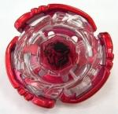

Cyber Pegasis 100HF
| Cyber Pegasis 100HF | |
|  | |
| Number: | |
|---|---|
| System: | Hybrid Wheel System |
| Type: | Attack |
Contents
Note: Cyber Pegasis 100HF was initially released exclusively with the Bakuten Cyber Pegasis DS video game, even with its localisation outside Japan. Later, Hasbro recoloured this Beyblade and replaced its Track and Bottom to represent a real Hybrid Wheel version of the Metal System Pegasis 105F Starter.
Face: Cyber Pegasis
The Face depicts Pegasus, one of the 88 constellations in space. It was however completely redesigned for this model. Cyber Pegasis? Face features a a technological, cybernetic, profile-view of a Pegasus.
Clear Wheel: Pegasis
- Weight: 2.9 grams
The original release of Pegasis is a blue transparent plastic wheel. The edges of the Clear Wheel are shaped in a wing like pattern, each ending in a pointed 'head' shape, representing the body form of Pegasis, the symbol its design is influenced by.
Metal Wheel: Cyber
- Weight: 29.46 grams
Cyber is styled like a Hybrid Wheel System version of the Metal System Pegasis with a three-winged design. Its original release is painted a crimson red.
Like the original Pegasis Wheel, it was meant for Attack, notably Force Smash. However, in fact, Cyber is even more useless than Pegasis, which at least enjoyed momentary use in competitive Attack types. This Hybrid Wheel System version is lighter than Pegasis in order to compensate for the Clear Wheel on top of it, and its wings are ever so slightly rounder and not as pronounced, which ruins its potential of achieving decent attacks. Having no use in Stamina nor in Defense because of its Recoil, Cyber is outclassed in all fields. Overall, it should be one of the last choices for Attack.
Use in Attack Customization
If you somehow don't have access to competitive Wheels, MF Cyber ____ 145RF is a viable Attack combo, mostly in Hasbro metagames.
Track: 100
- Weight: 1.0 grams
This track is currently the third lowest track available, but is outclassed in terms of Attack and Stamina by the 85 and 90 Tracks. 100 usually has no problem with floor scrapes, and while it is generally an outclassed part, is still competitively viable, particularly in Attack customizations where it is able to make good contact with most opposing Beyblades.
Use in Stamina Customization
If 85 or 90 are not available, 100 can be put to use in the custom Earth Bull 100WD.
Use in Attack Customization
If 85 and 90 are not available, 100 can be put to good use in the combo MF Lightning L Drago 100LRF.
Use in Defense Customization
If 85 or 90 are not available, 100 can be put to use in the custom MF-H Basalt Kerbecs 100RS.
Bottom: Hole Flat
| Weight: | 0.5 gram | Full Width: | 15.95 mm | Tip Width: | 4.01 mm | Hole Diameter: | 2.27 mm | Full Height: | 8.96 mm | Tip Height: | 6.02 mm |
HF has a very similar movement speed to that of F, with the main difference being a slight Stamina improvement due to the hole in the middle of the tip. However, this comes with the detriment of even less grip to the stadium floor than F, as well as increased fragility.
Other Versions
- Cyber Pegasis 105F - Hasbro Legend Series Booster (Unpainted Metal Wheel, blue Clear Wheel)
Gallery
Overall
Cyber Pegasis 100HF doesn't have many good parts other than the 100 Track which can be obtained in more useful Beyblades like Lightning LDrago 100HF. There is little to no reason to purchase this Beyblade, aside from collection purposes.